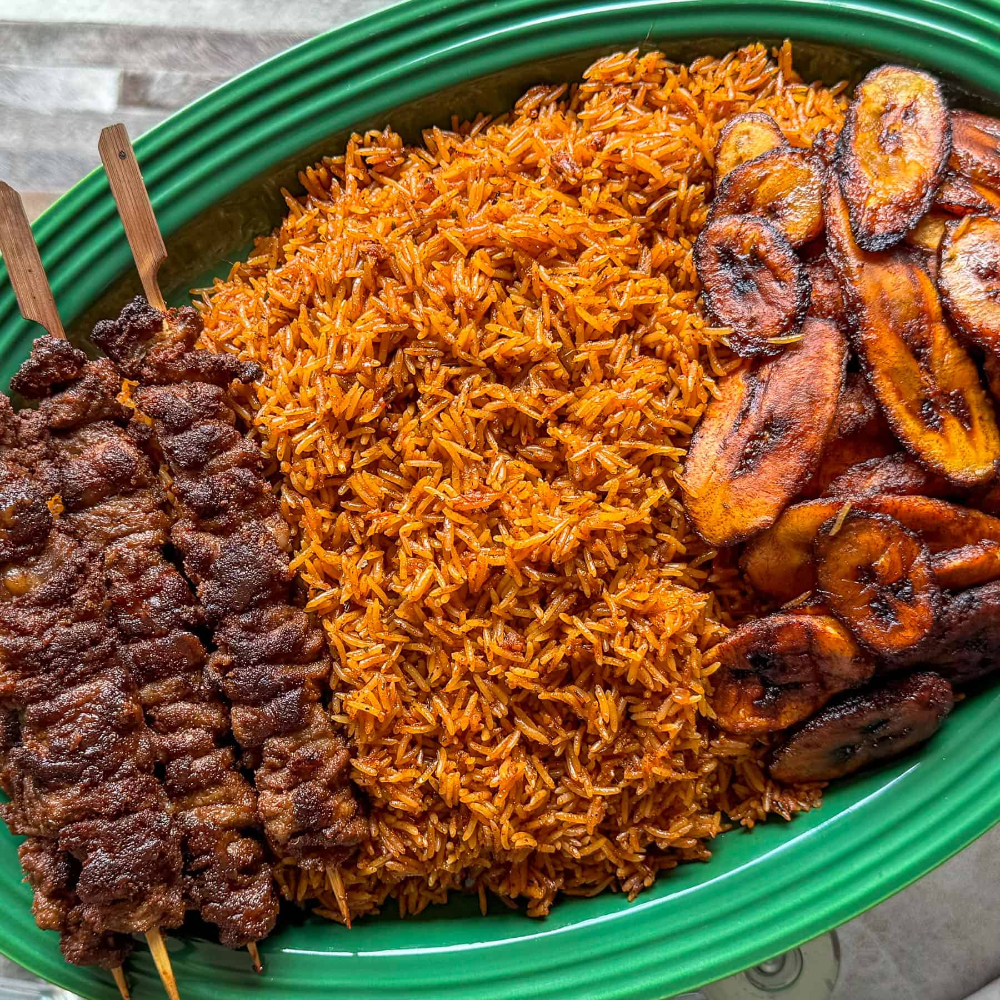
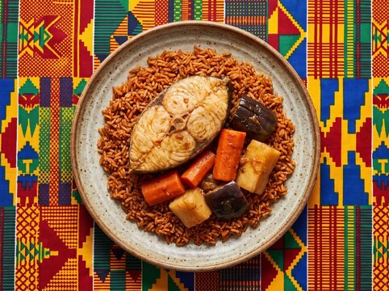

Culinary region
West Africa
From the Sahel to the Gulf of Guinea, West African meals pair hearty soups and stews with starchy "swallows" eaten by hand. Heat comes from scotch bonnet peppers, and richness from palm oil and groundnuts.
Staples
- Maize and cassava, fermented for banku and kenkey
- Yam, boiled, fried or pounded into fufu
- Plantain, ripe and fried or green and boiled
- Rice, the base of jollof
- Groundnuts, for soups and snacks
Cooking techniques
- Fermenting corn and cassava doughs for a gentle sourness
- Grinding fresh pepper in an asanka (clay bowl)
- Grilling fish over charcoal
- Pounding yam and cassava into smooth fufu
Dishes to try

Banku and Tilapia
Ghana, Fermented corn dough with grilled tilapia
View recipe →
Jollof Rice
Ghana and Nigeria, Rice in a smoky tomato base

Thieboudienne
Senegal, Fish and vegetables on rich tomato rice